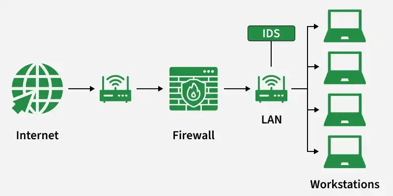

8. Intrusion Detection and Response
Overview
Intrusion Detection and Response (IDR) is the active, continuous layer that complements static controls (cryptography, protection models, kernels). Master §8.1 governance and §8.2 SOC lifecycle first; §8.3–§8.8 are GeeksforGeeks reference depth on IDS technology.
| Control | Role | Typical action |
|---|---|---|
| Firewall | Perimeter filter by rule | Allow / deny traffic |
| IDS | Detect suspicious activity | Alert administrators (passive) |
| IPS | Detect and block inline | Drop or reset malicious sessions (active) |
8.1 Introduction & Operational Governance
An Intrusion Detection and Response (IDR) framework represents the active operational center of an enterprise security architecture. While cryptographic controls and protection models act as static defenses to secure data at rest and in transit, IDR provides the dynamic monitoring and reactive capabilities needed to detect, analyze, and neutralize active cyberattacks before they can cause catastrophic business damage.
To build a resilient security posture, organizations shift away from basic, passive perimeter filtering toward an active, continuous monitoring model. Modern information security governance relies on a comprehensive, four-part structural strategy:
┌────────────────────────────────────────────────────────┐ │ Four Pillars of Information Security Governance │ ├────────────────────────────────────────────────────────┤ │ 1. Writing & Implementing Enterprise Policy │ │ └──► 2. Planning & Executing Effective Programs │ │ └──► 3. Installing & Testing Countermeasures │ │ └──► 4. Measuring Employee Training │ └────────────────────────────────────────────────────────┘
1. Writing & Implementing Enterprise Information Security Policy
The administrative foundation of any intrusion response system is a formally documented, legally binding Information Security Policy. This high-level document establishes management's commitment to security, defines roles and responsibilities across the company, and outlines the organizational rules for data protection. It grants security operations teams the legal authority to monitor network traffic, inspect endpoints, and isolate compromised systems during an incident.
2. Planning & Executing Effective Information Security Programs
An effective security program translates abstract policy guidelines into structured, daily business operations. It coordinates budgets, selects security standards (such as NIST or ISO 27001), establishes a Security Operations Center (SOC), and ensures that the organization maintains adequate visibility across all cloud, on-premises, and hybrid infrastructure environments.
3. Installing & Testing Technology-Based Information Security Countermeasures
This phase involves deploying and validating technical defenses across the network architecture. Security teams install advanced defensive technologies—including Next-Generation Firewalls (NGFWs), Intrusion Detection Systems (IDS), Intrusion Prevention Systems (IPS), and Endpoint Detection and Response (EDR) agents. Auditors evaluate whether these controls are effective under Topic 7 §7.5.
Crucially, these countermeasures cannot simply be installed and left alone; they must undergo continuous validation through routine Penetration Testing and Breach and Attack Simulation (BAS) drills to ensure that detection signatures and alerting thresholds are working as intended.
4. Conducting & Measuring the Effectiveness of Employee Training and Awareness Activities
Because human error remains a primary vector for initial network entry (via phishing, credential harvesting, or social engineering), organizations must maintain continuous security awareness programs.
The effectiveness of these programs must be empirically measured over time through metrics like Phishing Click-Through Rates and Reporting Latencies (tracking how many employees click on a simulated phishing link versus how many safely report it to the security team).
8.2 The Continuous Technical Phase Lifecycle of Intrusion Handling
When an attack occurs, an enterprise relies on a highly structured, cyclical operational workflow to manage the incident. This lifecycle ensures that attacks are detected early, contained quickly, and thoroughly investigated to prevent future breaches. For audit-oriented IR planning, see Topic 7 §7.7.
M-D-A-I-R-R: Monitor → Detect → Alert → Investigate → Respond (contain / eradicate / recover) → Report.
Phase 1: Monitoring (Continuous Visibility)
Monitoring is the continuous process of gathering real-time telemetry, log files, and network packet information across the organization's digital environment to ensure complete visibility.
Data Sources & Telemetry Gathering
- Network Logs: Collecting NetFlow data, DNS resolution queries, proxy access logs, and raw packet captures (PCAPs) from core routers and switches.
- Host Logs: Ingesting event logs from operating systems (e.g., Windows Event Logs, Linux Syslog), audit daemons, and authentication services (Active Directory).
- Application Logs: Capturing activity records from databases (SQL queries), web servers (Nginx/Apache access logs), and API gateways to identify logic abuse.
- Security Countermeasures: Gathering alert feeds from local firewalls, antivirus platforms, and cloud access security brokers (CASBs).
SIEM Integration & Log Centralization
To manage these massive volumes of data, enterprises implement a SIEM (Security Information and Event Management) platform (such as Splunk, Microsoft Sentinel, or Elastic Security). The SIEM acts as a centralized repository, ingesting millions of event logs from across the network, normalizing the data formats, and preparing the records for real-time analysis.
Phase 2: Detection (Anomalies & Attack Identification)
Detection is the technical process of analyzing normalized SIEM logs and network streams to identify active attacks, security policy violations, or suspicious anomalies.
┌─────────────────────────────────────────┐
│ Detection Methods │
└────────────────────┬────────────────────┘
┌──────────────────────────┴──────────────────────────┐
▼ ▼
┌────────────────────────┐ ┌────────────────────────┐
│ Signature-Based │ │ Anomaly-Based │
│ Matches Known Patterns │ │ Flags Baseline Deviations│
│ Low False Positives │ │ Catches Zero-Day Flaws │
└────────────────────────┘ └────────────────────────┘
1. Signature-Based Detection (Knowledge-Based)
How it works: The system compares incoming network packets or system events against a database of known attack patterns, file hashes, or malicious indicators—universally called Signatures.
Example: An IDS scans an incoming file download, notes that its MD5 hash matches a known variant of ransomware, and flags it instantly.
Pros: Highly accurate and reliable for catching known threats, with a very low rate of False Positives (incorrectly flagging legitimate traffic as malicious).
Cons: Completely blind to Zero-Day Attacks (new vulnerabilities or customized malware payloads that have never been seen before and lack an established signature).
2. Anomaly-Based Detection (Behavior-Based)
How it works: The system first observes normal network behavior over an extended testing window to establish a trusted Performance Baseline (tracking metrics like standard CPU loads, typical database query volumes, and normal employee login times). Once the baseline is set, the system uses machine learning models to identify any statistical deviations from those patterns.
Example: If an engineer who normally logs in from an office IP address between 9:00 AM and 5:00 PM suddenly logs in at 3:00 AM from a foreign VPN node and attempts to download 50GB of database files, the system flags the behavior as a major anomaly.
Pros: Highly effective at identifying zero-day exploits, advanced persistent threats (APTs), and compromised insider accounts.
Cons: High rate of False Positives, as normal business changes (e.g., a software update causing a sudden spike in network traffic) can easily trigger false alarms, creating alert fatigue for analysts.
Phase 3: Alerting (Triage & Notification)
Once a detection engine identifies a signature match or a significant behavioral anomaly, it triggers the Alerting phase to notify security analysts.
Alert Triage & Prioritization
Because modern networks generate thousands of automated security alerts daily, systems map events to the universal CVSS severity scale (Low, Medium, High, Critical) to prioritize responses. This ensures that a critical remote code execution alert on a production database is investigated immediately, while a low-priority notification about a minor configuration issue is queued for later review.
Reducing Alert Fatigue
If a detection system is poorly tuned, it can overwhelm security teams with false alarms—a condition known as Alert Fatigue. To prevent analysts from missing true attacks amidst the noise, engineers continuously tune rules, suppress known non-malicious alerts, and use automated correlation scripts to combine multiple related low-level events into a single, high-fidelity security incident.
Phase 4: Investigation (Analysis & Contextualization)
During the Investigation phase, a Tier-1 or Tier-2 SOC analyst takes ownership of an alert to verify whether it represents a true security breach or a false positive.
Investigative Triage Steps
- Verification: The analyst reviews the raw log entries, packet captures, and system states to verify the legitimacy of the alert, filtering out false positives.
- Contextual Ingestion: Gathering adjacent data to understand the scope of the event. The analyst will check the target system's business value, identify its owner, and trace user access histories.
- Threat Intelligence Correlation: Cross-referencing the alert indicators (IP addresses, domain names, file hashes) against global threat intelligence feeds (such as VirusTotal, AlienVault OTX, or MITRE ATT&CK frameworks) to identify known malicious campaigns or threat groups.
Phase 5: Response (Containment, Eradication, & Recovery)
When an investigation confirms an active breach, the team moves into the Response phase to contain the attack and minimize business damage.
[ Containment ] ──► [ Eradication ] ──► [ Recovery ]
1. Containment (Isolating the Threat)
The immediate goal is to stop the attack from spreading across the network (lateral movement).
Short-Term Actions: Disconnecting compromised servers from the network, disabling compromised user accounts in Active Directory, or modifying firewall rules to block the attacker's command-and-control (C2) IP addresses.
2. Eradication (Eliminating the Threat)
Once the attack is contained, the team securely removes all remnants of the threat from the environment.
Actions: Deleting malware files, cleaning registry keys, terminating unauthorized background processes, and patching the software vulnerabilities that allowed the attacker to gain entry in the first place.
3. Recovery (Restoring Operations)
The final step is safely returning affected systems to full production operations.
Actions: Restoring data from verified, clean immutable backups, resetting passwords across all compromised user accounts, and monitoring the restored systems closely to ensure the attacker does not attempt to re-enter.
Phase 6: Reporting (Documentation & Root-Cause Analysis)
The lifecycle concludes with the Reporting phase, which documents the incident for corporate compliance, legal protection, and ongoing defensive improvements. Audit-style reporting structure: Topic 7 §7.9.
Essential Components of an Incident Report
- Executive Summary: A high-level, business-focused summary of the incident, its operational impact, and the remediation costs, tailored for executive leadership and board members.
- Chronological Timeline: A granular, timestamped breakdown of the incident, documenting exactly when the initial entry occurred, when the alert fired, when containment was achieved, and when full recovery was completed.
- Technical Root-Cause Analysis (RCA): A deep technical post-mortem detailing exactly how the attacker bypassed defenses (e.g., documenting an unpatched software bug or a specific phishing email).
- Lessons Learned & Action Item Plan: A list of actionable recommendations designed to improve the organization's defenses and update incident playbooks, ensuring that the same vulnerability cannot be exploited in a future attack.
8.3 Intrusion Detection System (IDS) — Overview
An Intrusion Detection System (IDS) is a security tool that monitors network traffic or system activities to detect unauthorized access or suspicious behavior. Think of it as a "watchdog" that looks for signs of cyber attacks or security breaches, helping administrators respond quickly before damage occurs.
- Intrusion: Unauthorized access to a system, often by cybercriminals using advanced techniques.
- IDS Functions: Monitors traffic for unusual activities and alerts administrators when potential attacks are detected.
- Detection Focus: IDS looks for abnormal behavior that could harm data integrity, confidentiality or availability (Topic 1 — CIA triad).
Common Methods of Intrusion
- Address Spoofing: Hiding the source of an attack by using fake or unsecured proxy servers making it hard to identify the attacker.
- Fragmentation: Sending data in small pieces to slip past detection systems.
- Pattern Evasion: Changing attack methods to avoid detection by IDS systems that look for specific patterns.
- Coordinated Attack: Using multiple attackers or ports to scan a network, confusing the IDS and making it hard to see what is happening.
Working IDS
An IDS operates by monitoring network traffic or system activities to detect suspicious or malicious actions. Here's how it works:
- Traffic Monitoring: The IDS captures and monitors data flowing through the network.
- Pattern Matching: It compares the incoming data against a set of predefined rules or patterns that could indicate potential attacks or intrusions.
- Alerting: If the system detects an activity that matches any of these patterns, it triggers an alert to notify the system administrator.
- Administrator Action: Upon receiving the alert, the administrator can investigate the source of the potential attack and take necessary actions to mitigate the risk.

8.4 Classification of IDS
There are several types of IDS, categorized based on where they operate or how they detect intrusions:
1. Network Intrusion Detection System (NIDS)
Function: NIDS is deployed at strategic points within the network to monitor traffic from all devices.
Usage: It examines passing traffic across subnets and compares it against known attack signatures. When an attack is detected, it alerts the administrator.
Example: A NIDS could be placed in front of firewalls to monitor any attempts to crack the firewall.
2. Host Intrusion Detection System (HIDS)
Function: HIDS operates on individual devices (hosts) within the network.
Usage: It monitors traffic and file integrity on that specific host, comparing current system files with previous snapshots to detect unauthorized changes.
Example: A HIDS is often used on critical systems that should not be modified, like servers or sensitive machines.
3. Hybrid Intrusion Detection System
Function: A hybrid IDS combines multiple IDS types to provide more comprehensive protection.
Usage: It integrates host-based and network-based monitoring to give a complete view of network and system activity.
Example: Prelude is a hybrid IDS that combines NIDS and HIDS approaches.
4. Application Protocol-Based IDS (APIDS)
Function: APIDS monitors and analyzes application-specific protocols to detect potential attacks targeting specific applications.
Usage: It tracks communication protocols like SQL to detect malicious activity during database interactions.
Example: Monitoring SQL queries in a web server environment.
5. Protocol-Based IDS (PIDS)
Function: PIDS monitors communication protocols between devices (like HTTPS or HTTP) to detect abnormal activity.
Usage: It ensures that the communication follows expected patterns, identifying deviations that may signal an attack.
Example: Monitoring the HTTPS traffic entering a server.
8.5 IDS Evasion Techniques
Attackers often use methods to evade detection by IDS systems. Some of the most common evasion techniques include:
- Fragmentation: An attacker breaks down malicious packets into smaller fragments. Since IDS systems may only scan the full packet, these fragments can bypass detection.
- Packet Encoding: Attackers encode malicious packets using techniques like Base64 or hexadecimal encoding to hide malicious content from signature-based IDS systems.
- Traffic Obfuscation: Obfuscating the content of packets by altering the structure or encoding makes it difficult for the IDS to interpret and detect the attack.
- Encryption: Attackers may use encryption to hide malicious payloads, making it harder for an IDS to detect attacks hidden within encrypted traffic.
8.6 Detection Method of IDS (GeeksforGeeks)
In-depth comparison with examples and pros/cons: §8.2 Phase 2 — Detection. Text below is the GfG article recap.
Signature-Based Detection
This method relies on predefined patterns (signatures) of known attacks. It compares incoming data to a database of attack signatures.
- Easy to implement and effective for detecting known threats.
- Cannot detect new or unknown attacks unless their signature is added to the database.
- Example: Detecting a specific virus or malware pattern.
Anomaly-Based Detection
Anomaly-based IDS uses machine learning or statistical models to define what normal behavior looks like. Any activity that deviates from this norm is flagged as suspicious.
- Can detect unknown attacks or behaviors.
- High rate of false positives if the model is not fine-tuned.
- Example: Detecting abnormal traffic volume or unusual access patterns on a server.
8.7 Comparison with Firewalls, Importance, Placement, Benefits, and Limitations
Comparison of IDS with Firewalls
While both IDS and firewalls play important roles in network security, they serve different purposes:
- Firewall: A firewall works to prevent unauthorized access by restricting traffic between networks based on predefined rules. It blocks suspicious inbound or outbound traffic, but it doesn't alert you when an attack happens inside the network.
- IDS: An IDS, on the other hand, works by detecting and alerting on suspicious activity after an attack has occurred. It doesn't block traffic but instead alerts administrators so they can respond to potential threats.
See also Topic 3 — protection models for network segmentation and layered controls.
Importance of IDS
- Complementary Security Layer: IDS works alongside firewalls and other security measures to provide comprehensive protection.
- Early Detection: IDS can detect intrusions that bypass primary defenses like firewalls or VPNs.
- Rapid Response: Alerts from IDS help administrators respond quickly to attacks, potentially reducing damage.
Placement of IDS
- Behind the Firewall: Placing an IDS behind the firewall allows it to monitor incoming traffic without receiving internal traffic. This position provides visibility of external threats but avoids false alarms generated by internal traffic.
- Within the Network: An IDS placed inside the network monitors internal traffic, helping to detect intrusions after the firewall has been bypassed.
- Advanced IDS: In more sophisticated setups, an IDS may be integrated with the firewall, allowing for better response and detection of complex attacks entering the network.
Network placement diagram: §8.3 — Working IDS (Internet → Firewall → LAN → IDS → Workstations).
Benefits of IDS
- Detects Malicious Activity: IDS can detect any suspicious activities and alert the system administrator before any significant damage is done.
- Improves Network Performance: IDS can identify any performance issues on the network, which can be addressed to improve network performance.
- Compliance Requirements: IDS can help in meeting compliance requirements by monitoring network activity and generating reports.
- Provides Insights: IDS generates valuable insights into network traffic, which can be used to identify any weaknesses and improve network security.
Limitations of IDS
- False Alarms: IDS can generate false positives, alerting on harmless activities and causing unnecessary concern.
- Resource Intensive: It can use a lot of system resources, potentially slowing down network performance.
- Requires Maintenance: Regular updates and tuning are needed to keep the IDS effective, which can be time-consuming.
- Doesn't Prevent Attacks: IDS detects and alerts but doesn't stop attacks, so additional measures are still needed.
- Complex to Manage: Setting up and managing an IDS can be complex and may require specialized knowledge.
8.8 Intrusion Detection Systems (IDS) vs Intrusion Prevention Systems (IPS)
Intrusion Detection Systems (IDS) and Intrusion Prevention Systems (IPS) are two critical network security tools used to protect systems and networks from cyber threats. While they both aim to safeguard against cyberattacks, they differ in how they operate and the actions they take. Understanding the key differences between IDS and IPS is essential for creating a robust cybersecurity defense plan.
Intrusion Detection System (IDS)
IDS is a hardware or software tool that monitors and analyzes network or system activities for signs of unauthorized access or policy violations. It passively scans incoming traffic and compares it to pre-configured signatures or behavioral patterns. IDS alerts the system administrator when potential threats are detected but does not take any active action to block or mitigate them.
Example:
IDS detects an unusual spike in network traffic during off-peak hours and sends an alert to the administrator, notifying them of a possible security breach.
Intrusion Prevention System (IPS)
IPS is an advanced security system that not only detects malicious activities but also prevents them from happening in real-time. It intercepts network traffic, compares it to known threat signatures, and immediately blocks or neutralizes suspicious activities before they can cause damage. IPS is proactive, while IDS is primarily reactive.
Example:
IPS detects a malicious payload based on its signature and immediately blocks the traffic, preventing the malware from entering the network.
Key Differences Between IDS and IPS
IDS = passive monitor + alert (analyst decides). IPS = inline, blocks or resets traffic in real time. Both may use signatures; IPS adds enforcement. See also Overview table.
| Feature | Intrusion Detection System (IDS) | Intrusion Prevention System (IPS) |
|---|---|---|
| Functionality | Detects and alerts on malicious activities. | Detects, alerts, and blocks malicious activities in real-time. |
| Action | Does not take action, only provides alerts. | Actively blocks or neutralizes threats to prevent damage. |
| Response Time | Passive monitoring; alerts after the fact. | Real-time, active prevention of threats. |
| Use Case | Useful for monitoring and alerting about potential threats. | Suitable for preventing breaches in real-time. |
| Example | Alerting about traffic spikes during non-burst times. | Blocking malware in real-time based on a known signature. |
- Four governance pillars: policy → programs → countermeasures (IDS/IPS/EDR) → measured training.
- Six IDR phases: Monitoring → Detection → Alerting → Investigation → Response → Reporting.
- Signature-based detection: low false positives, blind to zero-days; anomaly-based: catches novel behavior, higher false positives.
- CVSS triage and rule tuning reduce alert fatigue in the SOC.
- IDS types: NIDS, HIDS, hybrid, APIDS, PIDS — choose by monitoring scope.
- Firewall blocks by rule; IDS alerts on suspicious activity; IPS detects and blocks inline.
- IDS placement: behind firewall (external threats) vs within network (post-perimeter intrusions).